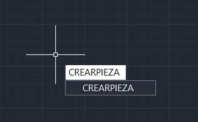
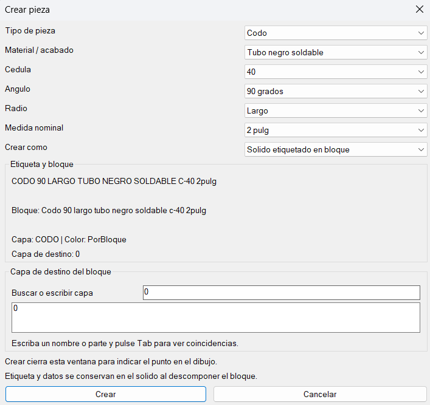
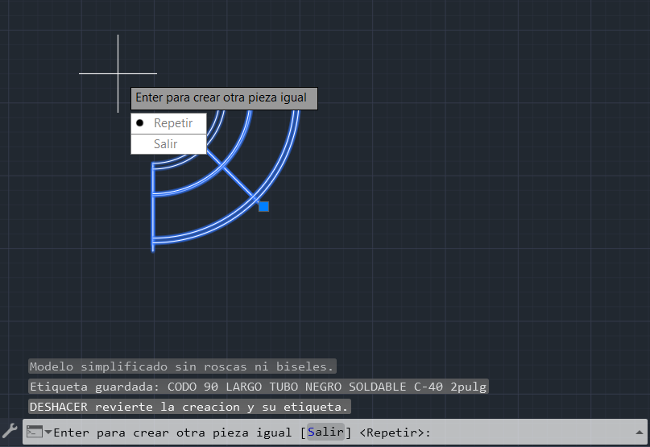

AutoCAD · Piping Component Generation | 11/2026
The CREARPIEZA command generates 3D piping components in AutoCAD from user-selected specifications.
- Configure. Select the part type, material, schedule, angle, radius, and nominal size. This example uses a 2-inch, Schedule 40, long-radius 90° elbow for weldable black pipe.
- Place. Review the generated label, block name, and destination layer. Pick the intersection of the elbow’s connection centerlines to insert it as a labeled solid inside a block.
- Repeat. Press Enter to insert another elbow with the same specifications, or exit the command.



